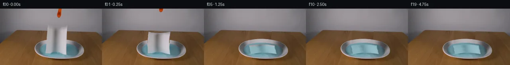

![首帧]()

Round 00
2026-11-05T14:42:50.526618+00:00像素候选变化代码 +223/−0inspection 更新
pixels fa9bf6b4d5742dd9 · code a61a67cca8385b72
查看本轮 generate.py 真实 diff
--- previous/generate.py
+++ current/generate.py
@@ -0,0 +1,223 @@
+"""Deterministic local-pixel continuation: a textured folding towel over a clean plate."""
+from pathlib import Path
+import json
+import numpy as np
+from PIL import Image, ImageDraw
+import cv2
+from scipy.ndimage import gaussian_filter
+from scipy.optimize import least_squares
+from artifact_io import save
+
+ROOT = Path(__file__).resolve().parent
+W, H, S = 256, 144, 4
+SOURCE = np.array(Image.open(ROOT / 'first_frame.png').convert('RGB'))
+F = SOURCE.astype(np.float32)
+Y, X = np.mgrid[:H, :W].astype(np.float32)
+
+def smooth(a, b, z):
+ z = np.clip((z-a)/(b-a), 0, 1)
+ return z*z*(3-2*z)
+
+def source_position(u, v):
+ top = np.interp(u, [0, .15, .35, .55, .8, 1], [41, 45, 47, 47, 45, 41])
+ bottom = np.interp(u, [0, .18, .35, .5, .62, .8, 1], [113.5, 113, 110.5, 109.8, 111.5, 115, 118])
+ yy = top*(1-v) + bottom*v
+ xx = (119 - 5.4*v)*(1-u) + (169 - 3*v)*u
+ return xx, yy
+
+# A hand measured silhouette is used only for extracting and removing the supplied towel.
+up = np.linspace(0, 1, 101)
+xs, ys = source_position(up, np.zeros_like(up))
+xb, yb = source_position(up[::-1], np.ones_like(up))
+poly = np.stack([np.r_[xs, xb], np.r_[ys, yb]], axis=1)
+paper_mask = np.zeros((H*S, W*S), np.uint8)
+cv2.fillPoly(paper_mask, [np.rint(poly*S).astype(np.int32)], 255)
+paper_mask = cv2.resize(paper_mask, (W,H), interpolation=cv2.INTER_AREA)/255.0
+hole = cv2.dilate((paper_mask*255).astype(np.uint8), np.ones((3,3),np.uint8))
+# Orange tip cropped at the upper frame boundary.
+tool_mask = ((X>139)&(X<158)&(Y<25)&(F[:,:,0]-F[:,:,1]>32)).astype(np.uint8)
+tool_mask = cv2.dilate(tool_mask, np.ones((3,3),np.uint8)).astype(np.float32)
+tool_mask = gaussian_filter(tool_mask, .35)
+all_holes = np.maximum(hole, (tool_mask*255).astype(np.uint8))
+clean = cv2.inpaint(SOURCE, all_holes, 5, cv2.INPAINT_TELEA).astype(np.float32)
+
+# Reconstruct the small piece of hidden wall from its measured per-row color field.
+wall = F.copy()
+for yy in range(0, 60):
+ xx = np.r_[np.arange(75,112), np.arange(175,220)]
+ vals = F[yy, xx]
+ z = (xx-148)/60
+ A = np.stack([np.ones_like(z), z, z*z],axis=1)
+ target = np.stack([np.ones(W), (np.arange(W)-148)/60, ((np.arange(W)-148)/60)**2],axis=1)
+ wall[yy] = target @ np.linalg.lstsq(A, vals, rcond=None)[0]
+wall = gaussian_filter(wall, (.35,.35,0))
+wall_area = (Y<55.5+.023*(X-110)) & (all_holes>0)
+clean[wall_area] = wall[wall_area]
+
+# Local wood texture, sampled from the same table on both sides of the occlusion.
+for yy in range(56,81):
+ for xx in range(112,172):
+ u = np.clip((xx-112)/60,0,1)
+ a = F[yy,max(0,xx-57)]
+ b = F[yy,min(W-1,xx+57)]
+ wood = (1-u)*a+u*b+np.array([5,3,1])*np.sin(np.pi*u)
+ if Y[yy,xx] >= 55.5+.023*(X[yy,xx]-110):
+ clean[yy,xx] = wood
+
+# Fit the visible rear dish outline; ignore one specular/color-threshold outlier.
+points=[]
+for xx in list(range(90,115))+list(range(170,210)):
+ ok=np.flatnonzero((np.abs(F[75:107,xx,0]-F[75:107,xx,1])<15)&(F[75:107,xx,0]>95))
+ if len(ok) and xx != 200: points.append((xx,float(ok[0]+75)))
+def outer_res(k):
+ cx,cy,rx,ry,tilt=k
+ return [cy-ry*np.sqrt(max(0,1-((xx-cx)/rx)**2))+tilt*(xx-cx)-yy for xx,yy in points]
+outer=least_squares(outer_res,[148,106,63,30,.03],bounds=([144,100,62,20,-.15],[154,110,70,35,.15])).x
+cx,cy,rx,ry,tilt=outer
+back = cy-ry*np.sqrt(np.maximum(0,1-((X-cx)/rx)**2))+tilt*(X-cx)
+water_back = 105.695-19.338*np.sqrt(np.maximum(0,1-((X-146.526)/49)**2))+.0254*(X-146.526)
+rear = smooth(-.5,.6,Y-back)*(1-smooth(-.4,.8,Y-water_back))
+metal = 185-.028*(X-143)**2 - .4*(Y-back) + 2*np.exp(-((Y-back-1.2)/.9)**2)
+metal_rgb = np.stack([metal,metal-5,metal-1],axis=2)
+region = (X>=112)&(X<=171)&(Y>=75)&(Y<96)
+clean[region] = (clean*(1-rear[:,:,None])+metal_rgb*rear[:,:,None])[region]
+
+# Least-squares blue surface reconstruction using original visible liquid pixels.
+water_bottom=105.695+18.6*np.sqrt(np.maximum(0,1-((X-148)/50)**2))+.012*(X-148)
+water_area=smooth(-.4,.8,Y-water_back)*(1-smooth(-.2,.9,Y-water_bottom))*smooth(0,1.5,50-np.abs(X-148))
… diff truncated; 136 more lines …